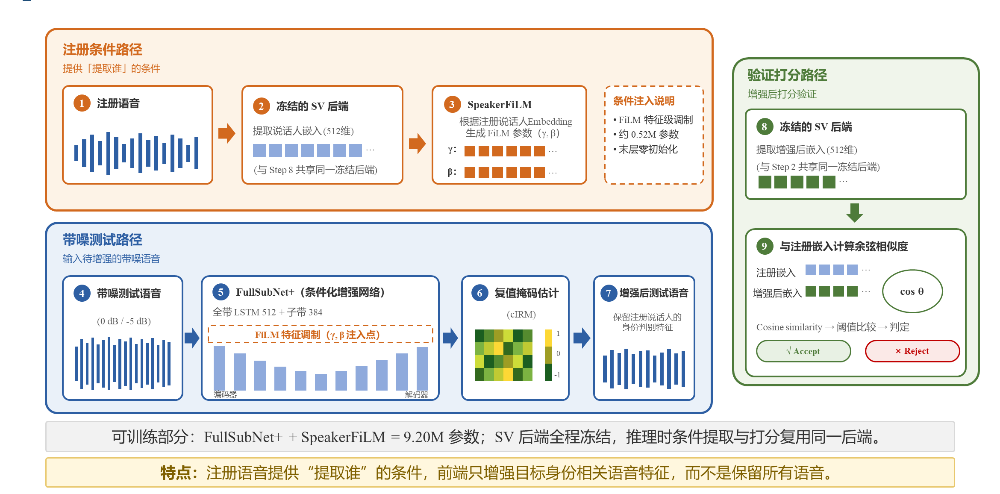
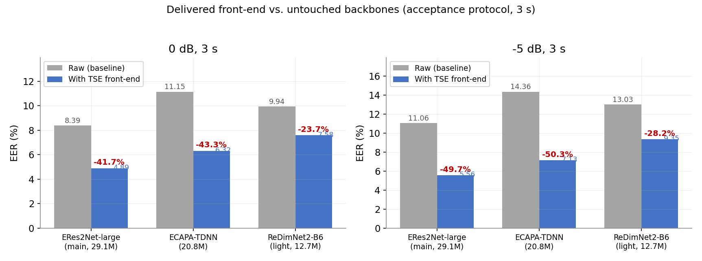
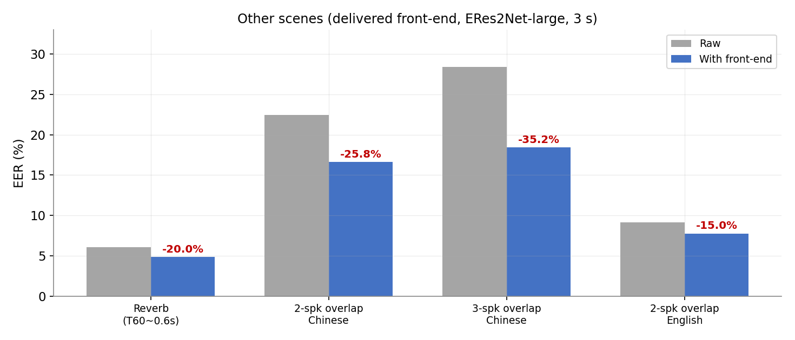
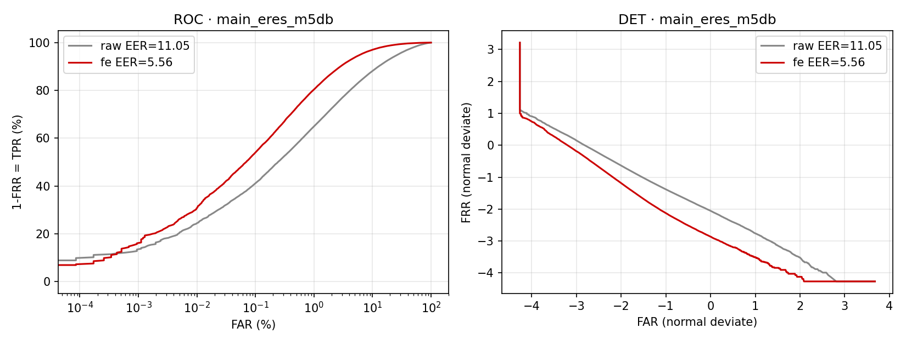
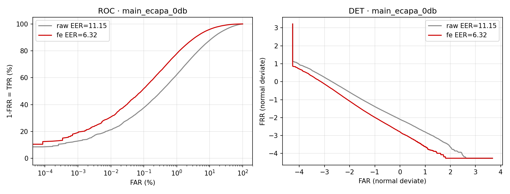
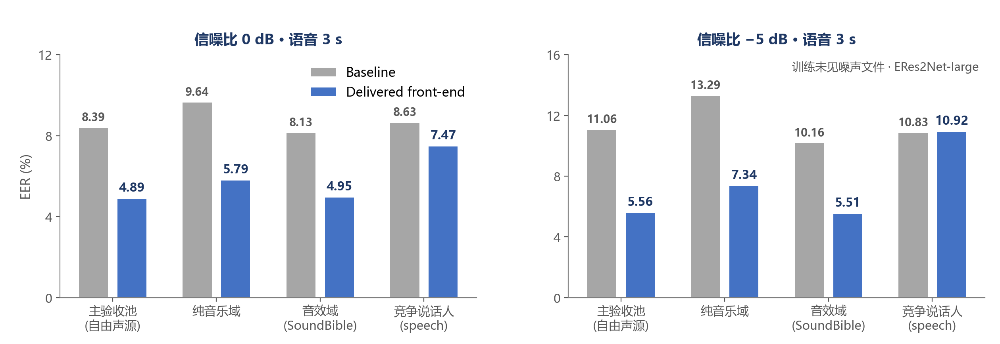
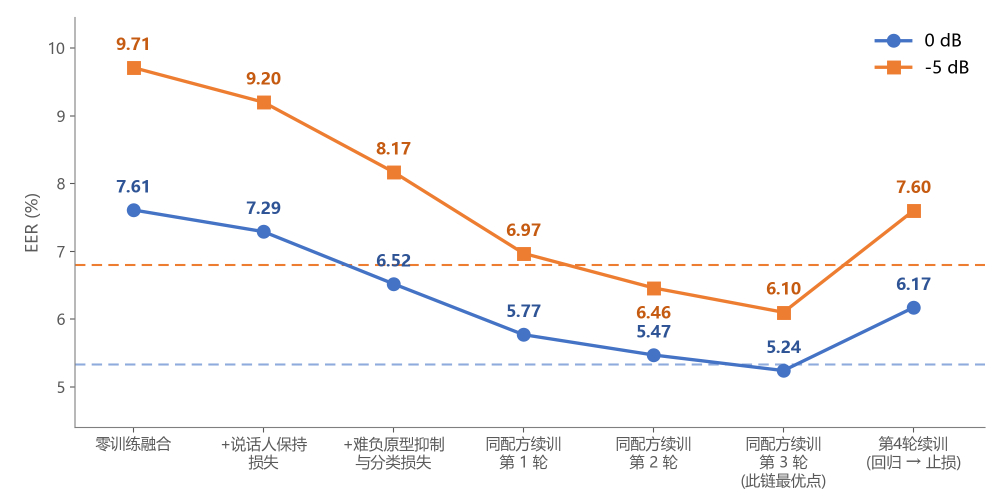
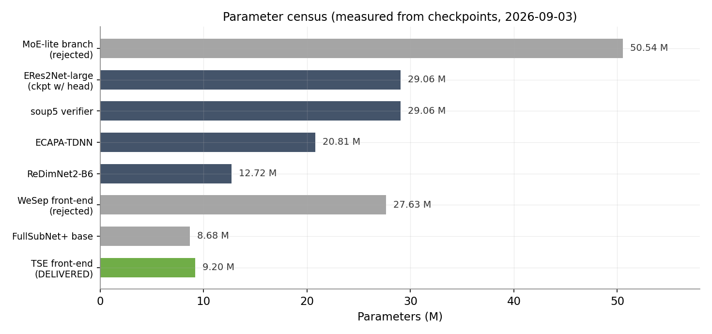
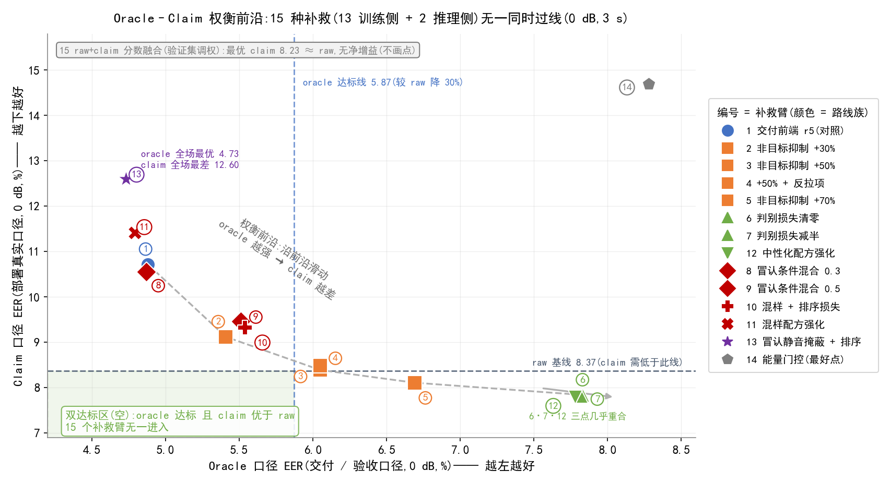

本报告面向 AI 眼镜、车载座舱等中文智能终端的开集声纹验证需求,解决低信噪比(0 dB、-5 dB)单说话人噪声下的说话人确认(EER)退化问题。我们从 3D-Speaker 中文数据出发建立了说话人隔离、开集验证、阈值冻结的统一评测体系,校准了三个量级的基线骨干(ECAPA-TDNN 20.8M、ERes2Net-large 29.1M、ReDimNet2-B6 12.7M),并先后排除了"冻结式后端微调"(配方迭代后增益 -8%~-16%,距 30% 达标线仍差约一倍)与"通用降噪前端"(负增益)两条自然路线;由"通用降噪抹平说话人身份特征"的负增益机理出发,提出注册条件化目标说话人提取前端:以注册语音的声纹嵌入通过特征级仿射调制(SpeakerFiLM)注入 FullSubNet+ 降噪网络,使其"只提取注册说话人",并配合说话人保持损失、难负原型抑制损失、判别分类损失与随机时长增强的四级迭代训练。
最终交付(验收口径):主力后端 ERes2Net-large 在 0 dB/-5 dB 的 EER 由 8.39%/11.06% 降至 4.89%/5.56%,相对未增强骨干降幅 -41.7% / -49.7%,大幅超过"降幅 ≥30%"的验收线;经典后端 ECAPA-TDNN 同步达到 -43.3% / -50.3%;轻量后端 ReDimNet2-B6 为 -23.7% / -28.2%。clean 语音无退化,非人声噪声域(music、音效)增益 -39% 以上全额迁移,混响 -20.0%、2-3 人重叠 -15.0%~-35.2%,1s/3s/5s 短语音全轴改善。
评测口径定义与部署口径(claim)分析见附录 C。
子课题一由 2 名成员协作完成,按"可复现评测基座 + 鲁棒算法主线"双支柱分工:数据与评测基座保证每个结论可追溯、可复现;算法主线保证每个决策都有官方口径的单次实测支撑。两人每周周报对齐进度,关键实验交叉校验。
| 成员 | 分工方向 | 主要工作 |
|---|---|---|
| 张启元(中国科学院大学) | 算法与实验主线 | 子课题需求分解与达标路线设计;训练/评测环境与自动化管线搭建;鲁棒方案设计与四轮迭代(冻结微调 → 通用降噪 → 注册条件化 TSE 前端);三后端全量实验与官方终评;失败案例挖掘、ROC/DET 分析;技术报告与汇报材料。 |
| 邓姣姣 | 数据与评测支撑 | 多条件测试数据协议制定(8 种声学条件派生,注册/trial 协议统一);单说话人噪声与多人重叠数据合成(SNR/TIR 元数据记录);三重数据泄漏检查(说话人/MD5/同源切片);统一评测脚本 evaluate.py(EER、minDCF、ROC/DET、固定阈值 FAR/FRR);鲁棒性文献调研(2024-2026 五类技术路线)。 |
依据《任务书》(任务.xlsx),子课题一的目标是:面向 AI 眼镜、车载座舱等智能终端,提升中文声纹识别在低信噪比和复杂声学条件下的稳定性。与"固定人员名单的闭集分类"不同,任务明确采用开集声纹验证:测试阶段的目标说话人不出现在训练集中,仅凭注册语音建立声纹模板;每条试验由"目标身份 + 测试语音"组成,同时包含本人试验与非本人试验。
| 层级 | 指标 | 本课题结果 |
|---|---|---|
| 挑战目标 | 单说话人噪声(-5 dB、0 dB 两档)EER 均 ≤ 0.5% | 未冲击(差距数量级,预期内) |
| 达标目标 | (基线EER − 改进EER) ÷ 基线EER × 100%,两档均 ≥ 30% | 主力 -41.7% / -49.7%;经典 -43.3% / -50.3% ✅ |
| 其他场景 | 不设统一硬阈值,分项报告 EER、minDCF、ROC/DET、固定阈值 FAR/FRR,禁止合并均值替代分项 | 全部分项报告(第 6 章) |
| 交付物 | 模型、权重、训练/评测代码、对比分析报告、失败案例 | 全部产出(附录 B) |
本章给出理解后续各章所需的最小背景:开集声纹验证的流程与指标(2.1、2.2)、三个基线骨干(2.3)、作为前端骨干的 FullSubNet+(2.4),以及本课题核心思想依托的目标说话人提取与 FiLM 条件化(2.5)。已熟悉这些内容的读者可直接跳至第 3 章。
声纹识别分为闭集辨认(从固定名单中分类"是谁")与开集验证(判断一句测试语音"是不是声称的那个人")。本课题采用后者,完整流程为:
判决:score ≥ 阈值 θ 判为目标(target,本人),否则判为非目标(nontarget,他人)。每条"测试语音 × 声称身份"组合称为一条 trial;开集测试集由目标 trial 与非目标 trial 按固定比例构成(本课题官方清单 1,378,206 条,目标 : 非目标 = 1 : 5.5,构建方式见 3.2)。
两条关键约束:"开集"意味着测试说话人不出现在训练集中——系统必须只凭注册语音建立模板,这是声纹验证与说话人分类的本质区别;阈值只能在验证集上确定、测试集冻结——否则相当于依据测试数据反馈调整系统参数,造成信息泄漏与评估失真(任务书明确规定,见 1.2)。
给定阈值 θ,记目标 trial 的分数分布为"真认分布"、非目标为"冒认分布",定义两类错误率:
θ 调低则 FAR 升、FRR 降,反之亦然——两类错误单调反向,单点错误率不能概括系统优劣。本报告采用四种互补指标:
官方口径取 Ptar=0.01、Cmiss=Cfa=1:目标先验仅 1% 意味着部署中非目标请求远多于目标,minDCF 因此对低误报区域的分数分布远比 EER 敏感。本课题主力 0 dB 格 minDCF 从 0.628 降至 0.515(−18%),显著小于 EER 的 −41.7%,正是这个原因(表 8)。
本课题在同一协议下对比三个量级的说话人嵌入提取器(全部输出定长嵌入,按 2.1 的余弦打分验证):
三骨干参数量差约 2.3 倍,恰好覆盖"端侧—经典—旗舰"三档,构成"大小模型比较"(第 8 章)的实验基础。
FullSubNet+[4] 是在 FullSubNet[3] 基础上改进的全带-子带融合单通道语音增强网络。输入 16 kHz 语音经 STFT(帧长 512、帧移 256)得 257 维复数频谱 Y(t, f),网络估计一个复数理想比例掩码(complex Ideal Ratio Mask, cIRM)M(t, f),与带噪谱相乘重建增强语音:
结构上,全带模型(LSTM,隐层 512)以整谱为输入,建模全局噪声上下文;子带模型(LSTM,隐层 384)以每个频带及其相邻 15 个频带为输入,建模局部谱细节;二者逐层互喂、互补长短。前瞻仅 2 帧、整体近因果,满足实时性;参数 8.68M,是"因果、实时、小参数量"约束下的合理选择。
目标说话人提取(target speaker extraction, TSE)把增强目标从"干净语音"改为"注册说话人的语音":网络除带噪输入外,还接收一份说话人条件(注册语音的声纹嵌入),据此决定保留谁、压制谁。VoiceFilter[5] 首次将该范式用于声纹验证:注册嵌入经仿射调制注入 LSTM 增强器,带噪验证错误率显著下降。
条件注入采用 FiLM[6](Feature-wise Linear Modulation,特征级线性调制)——把条件做成对中间特征的逐通道仿射变换:
其中 F 为网络中间特征,γ、β 为由条件嵌入 eenr 经小 MLP 生成的逐通道缩放与偏置系数,⊙ 为逐元素乘。相比只在输入端拼接条件向量,FiLM 让条件参与特征组合本身,表达能力强且几乎不增加参数。本课题的 SpeakerFiLM 即其工程实现(仅 0.52M,详见 5.1.2),并对调制层采用零初始化(γ=1、β=0),保证训练起点严格等价于无条件版本——条件能力在通用基座上渐进获得,而非通过整体重训获得。
本章所引文献见文末参考文献。
第一步用三个模型的官方预训练权重复现官方 cross-device / cross-distance / cross-dialect 三协议共 535,163 条 trial,与论文值对账:
| 模型 | 我们实测 cross-device EER(%) | 论文值(%) | 偏差 |
|---|---|---|---|
| ECAPA-TDNN(20.8M) | 9.31 | 8.87 | +0.44 pp |
| ERes2Net-large(29.1M) | 6.87 | 6.34 | +0.53 pp |
三个协议全部复现,偏差 < 0.6 pp;cross-dialect 最难(12-15%);轻量后端 ReDimNet2-B6 在 cross-distance 反超 ERes2Net。评测管线由此证明可信。
在 240 个官方测试说话人上构建四类角色划分——A 注册+正样本(180 人)、B/C 中文重叠干扰(15+15 人)、D 负样本/冒认(30 人)——另自 MUSAN speech(librivox)取 173 个英文说话人作 E/F 英文重叠干扰角色(中文侧 A+B+C+D 恰为 240 人、18,782 条;英文干扰为外部池,每人 1 条);一套注册语音(A 角色全部 8,687 条 clean)+ 一套试验清单 + 八套测试语音(clean、noise_0dB、noise_-5dB、混响、二/三人重叠 × 中文/英文);噪声取 MUSAN free-sound 段,训练池 615 条与测试池 168+ 条严格隔离;0 dB 与 -5 dB 同噪声同位置仅 SNR 不同;混响用模拟中等房间(T60 中位 0.60 s);重叠场景记录 TIR。全流程 seed=2026 固定可复现;打分文件采用官方格式 trials_cross_device 共 1,378,206 条(目标 211,400 : 非目标 1,166,806 = 1 : 5.5)。EER 由官方打分脚本插值计算,自建复算脚本与之逐位对齐(自检:官方全文复算 EER 4.8921 vs 官方 4.892)。
清单构成实测(9.6 统计):对全部 1,378,206 条 trial 的 utterance 编码逐条统计——设备维度 100% 跨越(协议保证);同时距离维度 93.9%、方言维度 87.1%、录音会话 97.1% 的 trial 也在跨越,仅 4.8% 是"只跨设备、同距离同方言"的纯净对。也就是说,该主基准在事实上是多条件复合评测(跨设备为主、混入大量跨距离/跨方言对)——这也是其 EER 显著高于 clean 的原因之一,报告所有结论均建立在这一(更难的)复合口径上。
表 1 | 统一多条件基准的未增强基线 EER(%)
| 后端(参数量) | clean | 0dB 1s | 0dB 3s | 0dB 5s | -5dB 1s | -5dB 3s | -5dB 5s |
|---|---|---|---|---|---|---|---|
| ERes2Net-large(29.1M)主验收靶子 | 5.29 | 18.56 | 8.39 | 7.86 | 21.44 | 11.06 | 10.08 |
| ECAPA-TDNN(20.8M) | 6.92 | 24.51 | 11.15 | 10.36 | 27.47 | 14.36 | 13.37 |
| ReDimNet2-B6(12.7M) | 6.13 | 21.73 | 9.94 | 9.50 | 25.55 | 13.03 | 12.35 |
注:验收档为 0dB/-5dB 3s(30% 线对应达标线 5.874/7.739);clean 列为 cross_device 3s 口径,ECAPA/B6 两格 9.4 补齐,补齐时 ERes2Net 复测 5.2928 与 8.28 锚 5.293 逐位一致,互为协议验证(见 6.1)。
4 卡 Tesla P100 服务器搭环境,190 GB 3D-Speaker 就绪,三模型官方协议校准(3.1 节)。横向结论:方言/cross-dialect 最难;ERes2Net 全面领先 ECAPA 约 20-26%;B6 以 12.7M 参数在部分协议反超——确立"多量级对比"的价值。
表 2 | 两条起点路线的排除记录(全链明细见表 2b)
| 路线 | 做法 | 结果 | 判决 |
|---|---|---|---|
| 冻结式后端微调 | 冻结底层卷积与 BN 统计,在线多条件微调(8.20/8.21 重写配方,完整配置见下文) | 0dB 8.39→7.69、-5dB 11.06→9.88;级联 7.50/9.51,分数融合最好 7.25/9.27 | 增益不足,未继续深入 |
| 通用降噪前端 | FullSubNet+ 以信号重建为目标,降噪后语音送验证器 | 0dB 降噪后 10.11,比带噪 8.39 还差 1.72pp | 负增益,判定为无效路线 |
冻结式微调的具体做法(8.20/8.21 重写配方):训练数据取 9,900 个训练说话人(与代理验证 100 人、官方测试 240 人三方互斥,准备脚本运行时断言)中等距抽取的 30,000 条;同一句语音在每个 epoch 动态生成 clean / 0dB / -5dB 三个版本(随机 3s 裁剪、随机训练噪声与随机偏移),每个 batch 严格 1:1:1。模型侧冻结 conv1/bn1/layer1/layer2(含 BN 统计量,防带噪统计漂移污染冻结层),layer3/layer4、特征融合与池化层解冻训练;9,900 类分类头不再随机初始化,改由预训练 ERes2Net 的逐说话人 clean 原型(嵌入质心、L2 归一)初始化并逐位回读校验;lr 2e-5、AAM-Softmax(margin 0.2、scale 32)、8 epoch。(该配方为归因重写版:首版经验式配方曾致八条件中六套退化,重写后全线转正;首版明细见《实验结果汇总》§2.1 留档。)
表 2b | 后端微调线的全链尝试(EER %)
| 配置(官方协议,trials_cross_device/3s) | clean | 0dB | -5dB |
|---|---|---|---|
| 未增强基线(pretrained ERes2Net) | 5.29 | 8.39 | 11.06 |
| robust 后端(8.21,原型初始化 + 1:1:1 微调) | 5.10 | 7.69 (-8.3%) | 9.88 (-10.7%) |
| 微调通用前端(8.18,加身份保持正则) | — | 7.79 (-7.1%) | 9.92 (-10.3%) |
| 前端 + robust 后端级联 | — | 7.50 (-10.6%) | 9.51 (-14.0%) |
| + 跨系统分数融合(grid 最优) | — | 7.25 (-13.6%) | 9.27 (-16.2%) |
| 理论加性上限(前后端增益独立叠加) | — | ≈7.09 (-15.5%) | ≈8.74 (-21.0%) |
| 30% 达标线 | — | 5.874 | 7.739 |
注:全部为官方协议实测(出处:AI/8.21 组合评测与 8.24 当期留档);配方修正后全线转正、clean 无退化,但距 30% 线始终差约一倍(级联 7.50/9.51 距线 1.63/1.77pp);五模型权重汤 soup5(7.61/9.72)见表 14。
中止该路线的三点依据:①幅度——全链最好成绩距 30% 线仍差 1.4~1.8pp,约为所需降幅的一半;②重叠——后端只被原始带噪域校准过,级联实测(7.50/9.51)明显逊于前后端增益独立叠加的上限(≈7.09/8.74),两路增益互相侵蚀;③机会成本——同期注册条件化前端单级即达 -33.5%/-40.9%(表 13)。微调线的最终产物 soup5(7.61/9.72)转用作训练期冻结验证器(表 3 轮 0),仍在交付链中发挥复用价值。
机理定位:分离度分析显示降噪抹平了跨句稳定的说话人身份特征(目标对分数均值 0.422→0.391)。这一"负增益"发现是全课题最重要的转折点——它证明语音增强做声纹前端,不能以 SNR/信号保真为目标。
VoiceFilter 式设计:注册语音过冻结声纹后端得 512 维嵌入,经 SpeakerFiLM 模块对 FullSubNet+ 做仿射调制(详见 5.1)。迭代按"每级只加一个变量"推进,全部在代理验证集选点、官方测试单次实测:
表 3 | 注册条件化迭代链(轮 0-6 冻结验证器口径,轮 7 交付口径)
| 轮 | 在上一版基础上 | 0dB | -5dB |
|---|---|---|---|
| 0 | 未增强 raw(冻结验证器口径) | 7.614 | 9.715 |
| 1 | 接入条件化前端:仅 Lse+Lce 基座适配训练,未加任何说话人侧损失 | 7.38 | 9.32 |
| 2 | + 说话人保持损失(系数 0.3) | 7.293 | 9.202 |
| 3 | + 难负原型抑制损失(系数 0.5) | 6.519 | 8.173 |
| 4-6 | 同配方延长续训 ×3(第 4 轮回归 → 止损) | 5.766 → 5.467 → 5.235 | 6.972 → 6.462 → 6.098 |
| 7 | + 随机时长增强续训 = 交付前端(换回预训练后端) | 4.89 | 5.56 |
轮 1 的准确含义(接入官方打分链路,而非分数融合):把 8.26 版条件化前端接入官方打分链路——FullSubNet+ 装载 8.18 通用基座权重,SpeakerFiLM 末层零初始化、恒等起步;推理增强时以说话人粒度的注册嵌入为条件(该说话人官方注册 clean 过冻结 soup5,均值+L2;同一条件覆盖该说话人的注册侧与打分侧全部语音),增强语音直接送同一冻结验证器打分。该级前端做过 3 轮基座适配训练(损失仅 Lse 重建 + Lce 判别分类,四损失中说话人侧的 Lspk/Lns 均尚未引入)——"接入后 7.38/9.32"相对轮 0 锚点 -3.1%/-4.1%,验证注册条件化方向本身有价值。此步不涉及任何分数级融合(降噪分支+原始分支的分数加权融合是 8.22-8.25 的独立支线,经验证无效后弃用,见《实验结果汇总》§2.3)。
图 1 | 研究路线图(①-③ 冻结验证器口径、④ 交付口径;与汇报 PPT 第 8 页对应)

图 2 | 交付前端结构(与汇报 PPT 第 13 页同图)
全带-子带融合降噪网络(结构详见 2.4)。输入 16 kHz 语音,STFT(帧长 512、帧移 256)得 257 维频谱;全带模型(LSTM,隐层 512)建模全局噪声上下文,子带模型(隐层 384,每子带看相邻 15 个频带)建模频带细节;输出复数理想比例掩码 cIRM,与带噪谱相乘重建增强语音。选它的原因:因果、实时、参数量小,且上一阶段的失败经验(4.2)正是在该骨干上取得——失败机理数据可直接复用。
注册语音过冻结声纹后端得 512 维说话人嵌入 eenr(评测实现:该说话人注册 clean 各条 3 s 定长 → 冻结后端 → 均值 → L2 归一)——它就是"提取谁"的条件。FiLM 的思想(2.5)是把条件做成对网络中间特征的逐频带仿射变换:
真实实现(tse_model.py):MLP 为 Linear(512→256) → ReLU → Linear(256→1,542),1,542 个输出拆为三路(复数谱幅度 / 实部 / 虚部)各自的 γ、β——每路 257 维逐频带系数向量,γ、β 的 shape 均为 (B, 3, 257),不是两个标量。注入位置在 FullSubNet+ 全带分支三路输入上:每路先过批归一化与 TSSE 通道注意力(channel_attention / channel_attention_real / channel_attention_imag),紧随其后做 FiLM 仿射,再进各自的全带 LSTM(fb_model / fb_model_real / fb_model_imag,隐层 512)。γ、β 沿时间轴广播:γk、βk 由 (B, 257) 升维为 (B, 257, 1),作用于 (B, 257, T) 的特征——同一频带的所有帧共享该频带的一组缩放/偏置系数,257 个频带各有独立系数。SpeakerFiLM 的三个设计决策:
交付实现的一个如实说明(代码级):子带输入的三个"全带输出展开"槽位,在交付代码(tse_model.py)中均取幅度路全带 LSTM 的输出 fb_output——与 FullSubNet+ 原版 forward 三路各取各自输出的写法不同,系 8.26 条件化改造时引入并沿用至交付版。其后果是:实部/虚部两路的 FiLM 注入虽然存在于结构中,其后级输出并不进入子带输入,训练中这两路 γ/β 梯度恒为零、始终保持零初始化的恒等;条件作用实际经由两条途径生效——①幅度路 γ/β 调制幅度特征、进入幅度全带 LSTM;②FiLM 后的幅度特征另按子带邻域(相邻 15 带,共 31 列)展开,直接构成子带输入的一部分。即条件既改写全带上下文,也直抵子带掩码估计;全部交付数字均由该实现实测得出。
M̂ 为前端估计的复数掩码,McIRM 为理想掩码("干净语音谱 ÷ 带噪谱",由训练时在线混合的干净语音与噪声即时计算)。该项约束前端首先是一个合格的降噪器——没有它,后三项说话人侧损失可能诱导网络输出虽可通过验证器、却偏离目标说话人干净语音的退化结果。它是全部条件化能力的地基,自通用基座阶段一直保留。
两个嵌入均由同一冻结后端 f 提取(训练实现:参考锚取同句干净语音的嵌入、no_grad 计算,与推理时的注册嵌入同后端同空间)。动机来自 4.2 的负增益机理:通用降噪会把增强语音的嵌入拉离注册嵌入(降噪抹平跨句稳定的身份特征);该项显式把增强嵌入拉回注册说话人方向,直接对齐验证打分所用的量——优化它就是在优化打分本身。第 2 轮引入,官方增益约 −4~−5%;系数 0.3 由剂量消融选定(7.2:倒 U 形剂量响应,0.1 与 0.5 均更差)。注意其作用范围:只出现在"注册者本人的混合语音"上(目标侧),不涉及冒认侧。
原型库 {pk} 取自 9,900 说话人 clean 原型表(prototypes.npz)——由原始预训练 ERes2Net 逐说话人提嵌入质心(每人 ≤8 句居中裁 3 s,逐条 L2 → 均值 → 再 L2),说话人与官方测试零交集;该表同时作为 Lce 分类头的初始化权重行,相当于"已有说话人空间"的一张静态地图。对每个 batch 的增强嵌入 eenh,计算分三步:
净效果:持续把增强嵌入推离其他说话人的嵌入区域,在冻结验证器的嵌入空间直接拉大目标/非目标判别间隔。关键工程事实:难例在每个 batch 在线挑选、损失即时计算——全程不改数据分布,没有任何重采样或样本加权;"难例利用"只存在于损失函数内部与验证选点(5.4),数据侧完全干净。第 3 轮引入,官方增益约 −10~−11%,是四级加码中单级贡献最大的损失(消融见表 12:λns 增益单调未饱和,且"通用最难原型池"优于"同域定向原型池"——难比"域匹配"更重要)。
其中 cos θj = wj · eenh / (‖wj‖ ‖eenh‖) 为增强嵌入与第 j 个原型(分类头权重行 wj)的余弦,y 为真说话人下标,超参 s=32、m=0.2。AAM-Softmax(加性角间隔[9])的要点:对真类别的判定角 θy 额外加上间隔 m 再进入 softmax——训练时真类别须以超过间隔 m 的优势胜出,迫使嵌入在空间中压出更宽的类间间隔;尺度 s 控制 softmax 的锐度。与标准用法的关键差别:此处分类头由预训练 ERes2Net 的 9,900 说话人 clean 原型表初始化并保持冻结,相当于一个永不更新的"免费教师"——把预训练模型已有的判别结构作为固定靶子,梯度只回传前端,让前端朝"验证器心目中的好嵌入"优化。该项自第 1 轮基座接入期即与 Lse 同在;第 3 轮叠加 Lns 后,二者一个推离难负、一个拉近真类,共同构成完整的判别约束。
表 4 | 损失族汇总
| 项 | 约束目标 | 系数 | 引入轮次与官方增益 |
|---|---|---|---|
| Lse | 掩码逼近理想 cIRM(保证仍是合格降噪器) | 1.0 | 通用基座自带 |
| Lspk | 增强嵌入对齐注册嵌入(目标侧拉回) | 0.3 | 第 2 轮,−4~−5% |
| Lns | 推离最难混淆原型(拉大判别间隔) | 0.5 | 第 3 轮,−10~−11% |
| Lce | AAM 角间隔分类(免费教师定靶) | 1.0 | 第 1 轮(基座接入期)即引入 |
注:另有段级随机 {1,2,3}s 时长增强(修 1s 短语音),属数据侧增强而非损失,配置见表 5。
表 5 | 实验条件与关键参数
| 项 | 配置 |
|---|---|
| 硬件 | 4 × Tesla P100-PCIE-12GB(nvidia-smi 实测);训练期与全量评测期共享使用,每卡独占单任务 |
| 训练数据 | 3D-Speaker 中文(说话人隔离);每轮抽样 30,000 条;噪声:MUSAN free-sound 训练池 615 条,SNR ∈ {0, -5} dB;段长 3.0s(交付版随机 {1,2,3}s) |
| 声学前端 | 16 kHz,STFT 512/256,257 维频带 |
| 模型 | FullSubNet+(全带 LSTM 512 / 子带 384,邻域 15,前瞻 2 帧)+ SpeakerFiLM(0.52M);自 8.18 通用基座(10 轮)叠加起步 |
| 优化 | lr 1e-5,batch 2,每 worker 6;每级续训 3 轮;seed=2026;延长续训阶段以代理验证集(含困难试验子集)选点,逐轮延长同配方训练 |
| 验证器/原型 | 冻结五成员权重汤 soup5(29.1M);AAM 头与 Lns 原型表 = 预训练 ERes2Net 的 9,900 说话人 clean 质心(L2 归一) |
| 训练纪律 | 代理验证集(100 未见说话人,1:5.5 对齐官方)选点;官方测试每个决策只跑一次;启动守卫(ckpt-config 一致性、manifest 校验);收敛守望(增益 <0.08pp 自动停) |
| 评测 | 官方 trials_cross_device(1,378,206 条);EER/minDCF 官方脚本;三卡并行一天完成交付大表 |
第 4.4 节的每一级迭代都严格走同一条流程,保证级间可比:
第 3 轮引入 Lns + Lce 后官方增益显著(0dB 8.39→6.52),且剂量消融(表 12)显示 λns 增益单调未饱和,遂采用同配方延长续训继续下压:以上一轮 checkpoint 为起点,数据、损失、超参完全一致再训 3 轮(优化器状态重置),循环 3 段(表 3 轮 4-6),逐段官方实测持续改善(0dB:6.519 → 5.766 → 5.467 → 5.235);尝试再延长时官方实测回归(+17.7%),按预声明止损线停机。再次强调:"难例利用"只存在于两处——损失内的在线难负挖掘(5.2)与代理验证的困难试验子集选点(本节)——数据侧无任何重采样或加权。
注册阶段(一次性):注册语音过冻结后端得 eenr,缓存为该用户模板。验证阶段(每次):带噪测试语音 + eenr → SpeakerFiLM 现场由该嵌入生成 γ/β(逐频带向量,5.1.2)→ FiLM 条件化增强(9.20M)→ 同一冻结后端提嵌入 → 与缓存模板余弦打分 → 冻结阈值判决。条件提取与打分复用同一后端——相比 VoiceFilter 需要独立 d-vector 网络的方案,省一份模型部署;全栈 31.7M / 约 127 MB(fp32,附录 A),前端近因果、支持流式处理,适配 AI 眼镜、车载座舱等终端场景。
运行速度实测(加前端的代价):以同批官方测试集(16,401 句 × 3s)在 Tesla P100 上的批量推理实测——原始路径(仅 ERes2Net-large 嵌入提取,batch 16)523 s,31.9 ms/句(RTF ≈ 0.011);前端增强(SpeakerFiLM + FullSubNet+,batch 8)两次独立实测 655 s(8.28 噪声档)与 668 s(9.3 clean 档),40.0-40.7 ms/句(RTF ≈ 0.014),跨日跨负载一致性 ±2%;加前端后的整链(增强 + 嵌入 + 余弦)约 72 ms/句,RTF ≈ 0.024,单卡吞吐约 14 句/s。即:单句验证耗时约为原来的 2.3 倍,前端自身开销约为后端嵌入的 1.3 倍——前端参数量虽只有后端的 1/3(9.2M vs 29.1M),但"全带 + 257 个子带 LSTM"逐帧展开的结构计算密度更高。RTF 远小于 1,实时性无虞。说明:以上为服务器 GPU 离线批量口径(含 wav 读写与 STFT/ISTFT,批量 8/16),流式单句首包延迟与终端芯片(NPU/DSP)上的实测留作后续评估。

图 3 | 三后端交付对比(3s)
表 6 | 交付大表(EER %,验收档 3s)
| 后端 | 0 dB(raw → 前端,降幅) | -5 dB(raw → 前端,降幅) | ||||
|---|---|---|---|---|---|---|
| 1s | 3s | 5s | 1s | 3s | 5s | |
| ERes2Net-large | 18.56→13.57 -26.9% | 8.39→4.89 -41.7% | 7.86→4.43 -43.6% | 21.44→14.74 -31.2% | 11.06→5.56 -49.7% | 10.08→4.90 -51.4% |
| ECAPA-TDNN | 24.51→18.35 -25.1% | 11.15→6.32 -43.3% | 10.36→5.74 -44.6% | 27.47→19.59 -28.7% | 14.36→7.13 -50.3% | 13.37→6.36 -52.5% |
| ReDimNet2-B6 | 21.73→18.36 -15.5% | 9.94→7.58 -23.7% | 9.50→7.20 -24.2% | 25.55→20.76 -18.8% | 13.03→9.35 -28.2% | 12.35→8.82 -28.6% |

图 4 | 其他场景分项对比(主力后端,3s)
表 7 | 其他场景分项(主力后端,3s)
| 场景 | raw | 前端 | 降幅 | 说明 |
|---|---|---|---|---|
| 回声/混响(T60 中位 0.60s) | 6.09 | 4.87 | -20.0% | 模拟 RIR 卷积 |
| 二人重叠·中文(TIR=0dB) | 22.42 | 16.63 | -25.8% | 干扰为竞争说话人 |
| 三人重叠·中文 | 28.43 | 18.42 | -35.2% | |
| 二人重叠·英文 | 9.13 | 7.76 | -15.0% | 英文干扰下增益部分衰减 |
注:固定阈值 FAR=5% 的 FRR 口径 2/3 场景达标(工作点全表见表 8)。

图 5 | 主力后端 -5dB 的 ROC 与 DET(原始 vs 前端)

图 6 | 经典后端 0dB 的 ROC 与 DET(原始 vs 前端)
注:两图均由官方打分文件后处理生成(gen_roc_det.py,2001 阈值点,DET 轴为正态概率刻度),自算 EER 与官方对账 <0.5pp;threshold–FAR–FRR 曲线数据见附录 B。
表 8 | 8 个评测格的 minDCF 与固定阈值工作点(raw / 前端成对)
| 评测格(3s) | EER(%) | minDCF(ptar=0.01) | FRR @ FAR=5%(%) | FAR @ FRR=5%(%) | ||||
|---|---|---|---|---|---|---|---|---|
| raw | 前端 | raw | 前端 | raw | 前端 | raw | 前端 | |
| 主力后端 0 dB | 8.39 | 4.89 | 0.628 | 0.515 | 12.46 | 4.77 | 14.98 | 4.77 |
| 主力后端 -5 dB | 11.05 | 5.56 | 0.687 | 0.557 | 18.07 | 6.20 | 27.09 | 6.19 |
| 经典后端 0 dB | 11.15 | 6.32 | 0.722 | 0.580 | 18.91 | 7.81 | 26.02 | 8.07 |
| 经典后端 -5 dB | 14.36 | 7.13 | 0.773 | 0.622 | 25.75 | 9.62 | 41.38 | 10.32 |
| 回声/混响 | 6.09 | 4.87 | 0.564 | 0.506 | 7.31 | 4.74 | 7.42 | 4.76 |
| 二人重叠·中文 | 22.41 | 16.63 | 0.914 | 0.860 | 46.05 | 33.28 | 65.94 | 46.10 |
| 二人重叠·英文 | 9.13 | 7.76 | 0.648 | 0.602 | 13.82 | 10.65 | 18.64 | 13.27 |
| 三人重叠·中文 | 28.43 | 18.42 | 0.979 | 0.934 | 61.02 | 39.89 | 76.39 | 48.58 |
注:minDCF 为官方脚本输出(ptar=0.01,cmiss=cfa=1),工作点由 2001 阈值点分位数扫描得到。minDCF 与 EER 八格全部同向改善,但低误报口径下幅度小于 EER(主力 0dB −18% vs −41.7%)——minDCF 对分数尾部更敏感;固定 FAR=5% 时主力/经典/混响各格 FRR 降至 4.7~9.6%,重叠场景 FRR 仍高(三人重叠 39.9%),人声盲区在工作点口径同样可见。

图 7 | 噪声域对比(换域噪声均为训练未见)
表 9 | 噪声域对比(域泛化)
| 噪声域 | raw 0dB / -5dB | 前端 0dB / -5dB | 降幅 | 判读 |
|---|---|---|---|---|
| 主验收池(free-sound 后 20%,186 条) | 8.39 / 11.06 | 4.89 / 5.56 | -41.7% / -49.7% | 主验收场景达标 |
| 纯音乐域 | 9.64 / 13.29 | 5.79 / 7.34 | -39.9% / -44.8% | 非人声全额迁移 |
| 音效域(soundbible) | 8.13 / 10.16 | 4.95 / 5.52 | -39.1% / -45.7% | 同上 |
| 竞争说话人域(speech) | 8.63 / 10.83 | 7.47 / 10.92 | -13.5% / +0.8% | 结构性盲区 |
注:非人声噪声 −39% 以上,主池结论非过拟合;人声干扰是结构性盲区——前端对"语音型干扰"的压制能力有限,与重叠场景增益偏低、附录 C 泄漏机理同根。
验收条款只约束测试侧噪声;真实部署中注册语音本身也可能带噪。在 100 人代理验证集(训练/测试均未见过的说话人)上做注册侧 SNR {clean, 15, 10, 5, 0} dB × 测试侧 {0 dB, -5 dB} 全网格诊断:注册语音按 SNR 加噪后仍作为前端增强条件,交付前端(r5)增强后打分(冻结验证器口径;官方测试集冻结不重调,故诊断在代理集完成)。
表 10 | 注册语音带噪 × 测试带噪全网格(EER %)
| 注册语音质量 | 测试 0 dB | 测试 -5 dB | ||
|---|---|---|---|---|
| raw | 前端 | raw | 前端 | |
| 干净注册 | 5.50 | 1.81 | 13.00 | 3.74 |
| 15 dB 注册 | 6.00 | 2.48 | 12.76 | 4.22 |
| 10 dB 注册 | 6.24 | 2.26 | 12.24 | 4.00 |
| 5 dB 注册 | 7.24 | 2.52 | 12.24 | 4.74 |
| 0 dB 注册 | 9.00 | 4.50 | 12.72 | 6.24 |
注:raw = 带噪注册嵌入直接对带噪测试语音打分(100 人代理验证集,产物 AI/8.27/diag_enroll_noise/)。注册质量下降时前端增益缓降但仍大幅有效——注册低至 0 dB 时相对降幅仍约 50%,部署时注册端不必苛求录音棚条件。

图 8 | 增量消融链(冻结验证器口径;虚线为该口径 30% 线)
两级损失各贡献 -4~-11%,难负原型抑制及同配方延长训练贡献最大(累计 -31.2%/-37.2%);第 4 轮过拟合回归(+17.7%),按预声明止损线停机。链路完整、可复现,详见 4.4 表 3。
同基座同预算三臂(0.1/0.3/0.5),困难验证集(与官方负对同构)选点,3 轮:
表 11 | 说话人保持损失系数消融
| λspk | 困难验证集 avg | 官方单次判决 |
|---|---|---|
| 0.1 | 7.750 | 未触发官方 |
| 0.3 | 7.403(加速下行) | 官方实测 7.293 / 9.202 |
| 0.5 | 7.750 | 未触发官方 |
注:倒 U 形剂量响应,0.3 最优;官方增益落在预声明饱和带(<0.1-0.2pp)→ 不堆轮数,直接叠加下一级。
表 12 | 难负原型抑制系数与原型池消融
| 变体 | 困难验证集(0dB/-5dB) | 官方单次判决 |
|---|---|---|
| λns = 0.2 | 7.023(4.261/9.784) | 未触发官方 |
| λns = 0.5 | 6.881(4.045/9.716,单调未饱和) | 官方实测 6.519 / 8.173 |
| 原型池换成竞争说话人域定向 | — | 官方实测 7.184 / 9.005(更差) |
注:与消融 A 相反,λns 响应单调未饱和(支持继续加码);"最难"比"同域"重要——通用难例池优于同域定向池。
表 13 | 前端增益的跨后端迁移(延长续训第 2 轮版前端)
| 后端 | raw 0dB / -5dB | +前端 0dB / -5dB | 降幅 |
|---|---|---|---|
| ERes2Net-large | 8.390 / 11.055 | 5.576 / 6.531 | -33.5% / -40.9% |
| ECAPA-TDNN | 11.148 / 14.358 | 7.185 / 8.399 | -35.5% / -41.5% |
| ReDimNet2-B6 | 9.941 / 13.026 | 8.069 / 10.203 | -18.9% / -21.7% |
注:增益来自前端本身、可跨后端迁移,但在轻量后端的嵌入空间有所衰减——与其判别面性质有关(第 9 章)。
任务书要求"比较大模型、小模型及协同方案"。同一协议下的横向对比如下(0dB/-5dB,3s):
表 14 | 大、小模型与协同方案比较(0dB/-5dB,3s)
| 方案 | 参数量 | 0dB | -5dB | 说明 |
|---|---|---|---|---|
| WavLM-base[10](大模型,SSL 预训练,零样本) | ≈95M | 35.28 | 38.42 | 英文域预训练 + 域不匹配,中文跨设备协议上远差于监督中小模型;clean 亦 27.77 |
| WavLM-base(大模型,SSL,中文 90k 多条件微调后,9.3 补测) | ≈101M | 20.90 | 24.01 | 冻结 CNN 前端、transformer 全可训,7 轮;较零样本改善 11~14pp(clean 17.04),但仍大幅落后于 29M 监督模型——微调已把"不可用"拉回"可用",却无竞争力 |
| ReDimNet2-B6(小模型) | 12.7M | 9.94 | 13.03 | 参数最小,性价比高,但增益迁移有所衰减 |
| ECAPA-TDNN(中模型) | 20.8M | 11.15 | 14.36 | |
| ERes2Net-large(主骨干) | 29.1M | 8.39 | 11.06 | 主验收靶子 |
| 五模型权重平均(协同,soup5) | 29.1M | 7.61 | 9.71 | 后用于训练期验证器 |
| 八成员异构融合(含 WavLM,协同) | — | 7.21 | 9.15 | 融合系统历史最优;后被前端路线全面超越(同口径 5.24/6.10) |
| ERes2Net + 交付前端(本课题) | +9.2M | 4.89 | 5.56 | 全表最优 |
注:①大模型零样本在本协议无优势,域匹配比模型大小更重要;②SSL 大模型经中文 90k 多条件微调后仍大幅落后于 29M 监督模型——当前中文数据规模下,域匹配与数据规模比参数量更关键;③协同方案(权重平均/异构融合)有稳定但有限的收益;④"中等骨干 + 注册条件化前端"性价比最高。

图 9 | 参数量普查(完整数据见附录 A)
结合本次实习课题的科研与工程训练,我的职业规划分三个阶段:
| 阶段 | 规划 |
|---|---|
| 短期 (硕士在读,1-2 年) |
完成本课题交付与后续迭代;把注册条件泄漏机理、人声干扰盲区两个开放问题推进为论文成果(目标:说话人验证 / 语音增强方向会议或期刊);系统补齐语音大模型(SSL 预训练、多模态、流式部署)方向的工程能力。 |
| 中期 (毕业后 3-5 年) |
进入工业界从事语音算法研发,专注声纹验证、语音识别与增强技术在智能终端、车载等场景的规模化落地;保持与学术界的连接,持续在开源社区输出可复现的工作。 |
| 长期 (5 年以上) |
成长为能独立带方向的技术专家,深耕可信语音交互(鲁棒性、安全性、隐私保护);期望参与国产 AI 平台(如中国移动九天大模型生态)的语音能力建设,把课题中"从路线排除到交付"的方法论带进产业。 |
9.3 对全部 17 个 checkpoint 实测(脚本 census_params.py,口径:state_dict 浮点张量元素数;产物 params_census.json + 模型参数量统计.md):
表 15 | 参数量普查摘要
| 模型 | 参数量 | 文件 | 说明 |
|---|---|---|---|
| FullSubNet+ TSE 前端(交付 r5) | 9.20M | 35.2MB | 基座 8.68M + SpeakerFiLM 0.52M;全部补救臂同构 9.20M |
| FullSubNet+ 通用基座(8.18) | 8.68M | 33.2MB | 条件化之前的形态 |
| ERes2Net-large(主后端) | 29.06M | 111.0MB | ckpt 含分类头;嵌入提取器口径 22.46M |
| ECAPA-TDNN | 20.81M | 79.5MB | |
| ReDimNet2-B6 | 12.72M | 48.8MB | |
| soup5 / soup_w50(权重平均) | 29.06M | 111.0MB | 训练期冻结验证器 |
| 后端鲁棒微调系列(8.21-8.24 多配方) | 29.06M | 130.4MB(.tar 含优化器) | 与原架构同构的权重变体(soup5 即由该系列权重平均而来) |
| ECAPA robust(镜像微调) | 20.81M | 86.7MB | 第二后端交付 |
| MoE-lite 支线(否决) | 50.54M | 212.4MB | +74% 参数无收益,硬成本证据 |
| GateNet 支线(否决) | 29.25M | 131.1MB | +0.19M,增益不过判决线 |
| WeSep 第三方前端(探索弃用) | 27.63M | 269.5MB(含优化器) |
注:部署栈 = 前端 9.20M + 嵌入提取骨干 22.46M ≈ 31.7M ≈ 127MB(fp32),条件提取与打分复用同一后端。
| 内容 | 位置(服务器 /data/home/ligangrui/china_mobile/) |
|---|---|
| 任务书 | 任务.xlsx;课题分析报告(AI/) |
| 官方打分结果(逐格 EER/minDCF) | 各实验目录 */result.metrics |
| 交付终评全表 / 场景 / clean 基线 | AI/8.28/final_eval_r5/、AI/8.28/scenes_r5/、AI/8.28/clean_baseline_eres2net_3s/ |
| 噪声域对比 | AI/8.28/final_eval_r5/nd_r5_eres_*(前端)、AI/8.28/noise_domains/eval_raw/(锚点) |
| 增量/剂量消融官方结果 | AI/8.27/exp/official_*/;剂量判决记录 AI/8.27/README.md |
| claim 三口径与全部补救臂 | AI/8.31/claim_retest/、AI/8.31/claim_fix/(summary/energy_gate/fusion) |
| ROC/DET 与固定工作点 | AI/8.30/roc_det/(PNG+CSV+summary.json)、gen_roc_det.py |
| 失败案例挖掘 | AI/8.30/failures/failures.json、mine_failures.py |
| 注册语音带噪鲁棒性诊断 | AI/8.27/exp/proxy/diag_enroll_noise/summary.json |
| 参数量普查 | AI/9.3/census_params.py、params_census.json、模型参数量统计.md |
| clean 直测格(r5 前端增强 clean 测试集,9.3 补测) | AI/9.3/fe_clean/(launch_fe_clean.sh、fe_clean_eres_3s/result.metrics) |
| WavLM 微调版官方协议评测(9.3 补测) | AI/9.3/wavlm_ft_official/(wavlm_summary.json、scores/);微调训练 AI/8.24/wavlm_finetune.py、exp/wavlm_ft/ |
| clean 基准三后端 × 三时长全格(9.4 补测) | AI/9.4/clean_bench/{ecapa,eres2net,redimnet2}/{1s,3s,5s}/(result.metrics、trials_*.score);打分脚本 AI/9.4/score_clean_bench.sh |
| 汇总文档 | AI/9.3/README_实验结果汇总.md、项目完整故事_9.3.md |
| 交付 checkpoint | 前端 AI/8.27/exp/tse_v3_ns05duraug_r5/checkpoint_best.tar;后端 AI/8.24/exp/soup5/ |
| 训练/评测代码 | AI/8.26(tse_model.py、train_tse*.py)、AI/8.22(后端微调)、AI/8.27(exp/ 评测链) |
| 交付材料汇集(报告/PPT/讲稿/图/清单) | AI/9.3/交付材料_9.3/(00-08 目录;本地 E 盘同步备份) |
附注:周报(7.20-8.28 共 6 期)、开题报告与本报告数字一一对应;全部实验在 4×Tesla P100-PCIE-12GB 服务器完成,评测脚本可复现(seed 固定)。
表 16 | 交付前端三口径对比(0dB/-5dB,3s)
| 条件 | raw | oracle(交付) | claim(部署) |
|---|---|---|---|
| 0 dB | 8.37 | 4.88(-41.7% ✅) | 10.72(比 raw 还差 +2.36pp ❌) |
| -5 dB | 11.09 | 5.53(-50.1% ✅) | 12.85(比 raw 差 +1.76pp ❌) |
注:抽样 = 全部 211,400 目标 + 30,000 非目标,bootstrap 200 次 95% CI ≈ ±0.2pp。

图 10 | oracle-claim 权衡前沿(0dB,15 臂;双达标区为空)
注:横轴交付(oracle)口径、纵轴部署(claim)口径;左下绿区为"双达标区"(oracle 过 30% 线且 claim 优于 raw)——该区为空,15 臂全部落在权衡前沿上,点旁编号对应表 17/18 各补救臂。
表 17 | 训练侧补救 13 臂全量结果
| 臂(在交付前端基础上改了什么) | oracle 0dB / -5dB | claim 0dB / -5dB | claim 冒认分中位 |
|---|---|---|---|
| 交付前端(对照) | 4.88 / 5.53 | 10.72 / 12.85 | 0.129 |
| 难负原型抑制训练占比 +30% | 5.41 / 6.20 | 9.12 / 10.98 | 0.100 |
| +50% | 6.05 / 7.14 | 8.39 / 10.25 | 0.082 |
| +50% + 反拉项 | 6.05 / 7.14 | 8.48 / 10.32 | 0.082 |
| +70%(claim 首次优于 raw) | 6.69 / 8.30 | 8.11 / 10.05 | 0.069 |
| 判别损失清零(前端"中性化") | 7.83 / 9.98 | 7.84 / 10.00 | 0.051 |
| 判别损失减半 | 7.82 / 10.02 | 7.82 / 10.03 | 0.050 |
| 训练混入冒认条件样本 40%(强度 0.3) | 4.87 / 5.58 | 10.56 / 12.35 | 0.129 |
| 同上(强度 0.5) | 5.51 / 6.52 | 9.46 / 11.29 | 0.104 |
| 混样 + 排序损失 | 5.54 / 6.49 | 9.33 / 11.13 | 0.103 |
| 混样配方强化版 | 4.79 / 5.48 | 11.42 / 13.49 | 0.140 |
| 中性化配方强化版 | 7.78 / 9.98 | 7.79 / 10.00 | 0.051 |
| 冒认静音掩蔽 + 排序损失 | 4.73 / 5.39(oracle 全场最优) | 12.60 / 14.64(claim 全场最差) | 0.154 |
注:冒认分中位数(raw ≈ 0.044)直接度量"泄漏"强度,与 claim 恶化程度单调一致。
表 18 | 推理侧补救
| 推理侧补救 | 结果 |
|---|---|
| 能量门控(按增强语音能量静音可疑段,门限 -60…-10dB 全扫描) | 各门限 claim 恒劣于 oracle;最好点(-60dB,静音 9.8%)claim 14.69 vs oracle 8.28;静音比例升至 100% 双双归零——未恢复有效性能 |
| raw + claim 分数融合(验证集网格搜权重) | 最优 0dB 8.23 / -5dB 10.50——只回到 raw 附近,无净增益 |
验收(oracle)口径两个主后端 -41.7%~-50.4% 超额达标,验证了注册条件化增强能力;部署(claim)口径下,15 种补救实验刻画出清晰的权衡前沿,尚无方案同时满足"验收过线且部署优于基线"两项要求。最优补救臂(难负原型抑制占比 +70%)部署口径已优于未增强基线(-3.1%/-9.3%),但验收口径退回 1.7pp 线外。该现象由"条件化增强写入注册身份"的结构性机理决定,是本课题识别出的最重要的开放问题(解决方向见第 10 章展望)。